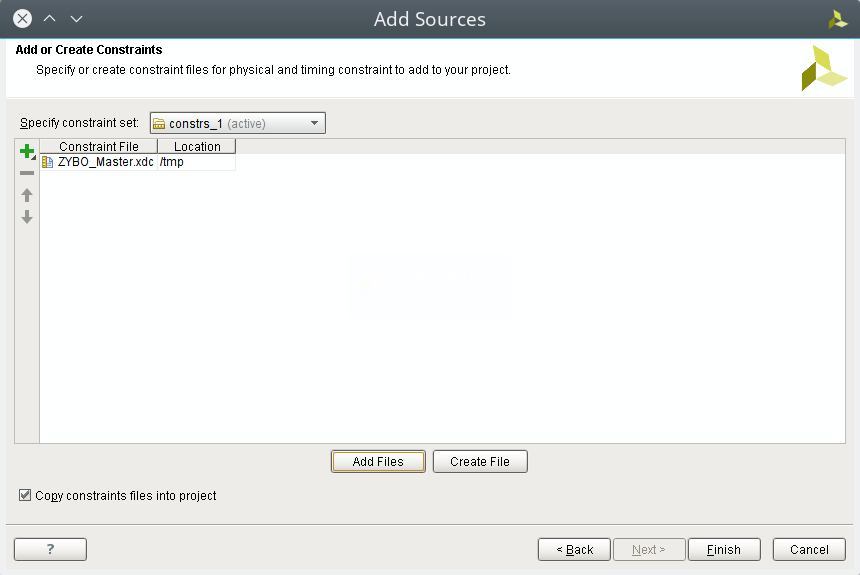
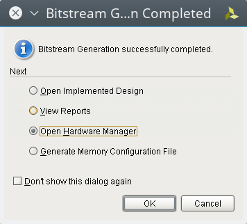

在進入到這種混搭 ARM/FPGA 的開發板的世界之前，很多人都是從純粹的 FPGA 開發板玩起，因此也讓我們看看如何僅透過可程式邏輯(Programmable Logic, PL) 來對 Zybo board 上面的 LED 進行閃爍控制。
(本文以 Vivado 2016.2 進行開發)
本文將採用業界比較常用的 Verilog 進行示範。
開發目標
我們要透過純粹的可程式邏輯(Programmable Logic, PL) 去控制 LED，也就是說，我們只寫硬體描述語言 Verilog 來控制 Zybo board 上面的 LED，讓他依照我們設定的頻率進行閃爍/亮滅。
根據 ZYBO FPGA Board Reference Manual 上面的資訊，我們想要控制的這四個在板子上的 LED 都是位於可程式邏輯區(Programmable Logic, PL)可以碰觸到的地方，如果你想要透過 Zynq 去對這些 LED 進行控制，你就會需要透過 AXI GPIO 的幫助，就像這樣:
關於如何在 Zynq 下面控制這幾個 LED，這部份我們將下一篇文章再來提及。
建立我們的專案
我們首先當然是建立我們的專案了，在進行這一步前，請先確定你有按照 讓 Vivado 有 Zybo Board 的設定檔 一文所說，將 Zybo board 的設計導入。
啟動了 Vivado 後，點選 Create Project 。
接下來指定好你的專案名稱與路徑
選擇 RTL Project
在開發板選項中，選擇 Zybo Board

完成專案建立
撰寫程式
在專案建立完後，接下來就是添加並撰寫我們的 Verilog 程式，點選 Project Manager -> Add sources 來增加檔案

由於我們要增加的是可程式邏輯的設計檔，因此選擇 Add or create design sources
選擇 Create File 去建立 top.v 這個檔案，這也同時是我們的主程式
建立好 top.v 後，點選它來進行編輯
top.v
在我們的主程式 top.v 中，我們定義了一組暫存器用來存放當前計數的狀態，每計數 125 百萬次後，就讓 led 暫存器的數值增加，反之則是讓計數器的內容增加。
選擇計數 125 百萬次的原因，在於我們會把 clk 這個輸入，連結到 125M Hz 的時脈輸入，這個時脈是由 50M Hz 的石英振盪器經過 Ethernet PHY 後所產生的

也就是說，由於我們的時脈輸入將會設定為 125 MHz，因此讓計數器計數 125 百萬次後調整 LED 暫存器的資訊，相當於 每 1 秒 修改一次 LED 暫存器的內容
我們的 top.v 程式如下
`timescale 1ns / 1ps module top(output [3:0] led, input clk); reg [3:0] led; reg [26:0] counter; always @(posedge clk) begin if (counter == 27'd1250000000) begin led <= led + 1; counter <= 0; end else begin counter <= counter +1; end end endmodule
加入 Constraints
我們撰寫好了 Verilog 模組 top.v，接下來就是要讓這模組的 I/O 和 Zybo board 的腳位對應到，我們先連結到 Zybo Resource Center 去下載 Master XDC 檔案。
你也可以直接透過 wget 命令下載並解壓出 ZYBO_Master.xdc 這個檔案，它就是本節要加入的 Constraints 檔
coldnew@gentoo /tmp $ wget https://reference.digilentinc.com/_media/zybo/zybo_master_xdc.zip coldnew@gentoo /tmp $ unzip zybo_master_xdc.zip Archive: zybo_master_xdc.zip inflating: ZYBO_Master.xdc
接下來一樣選擇 Project Manager -> Add sources 來增加檔案
這次我們要增加的是 Constraints 檔，因此選擇 Add or create constraints
透過 Add Files 添加剛剛下載的 ZYBO_Master.xdc 檔案

ZYBO_Master.xdc
在 ZYBO_Master.xdc 裡面，預設所有對應接腳都是被註解掉的，這邊我們反註解我們需要的 clk 以及 led 接腳，要注意到這邊的 I/O 名稱要對應到前面所寫的 top.v 裡面的 I/O 名稱。
##Clock signal ##IO_L11P_T1_SRCC_35 set_property PACKAGE_PIN L16 [get_ports clk] set_property IOSTANDARD LVCMOS33 [get_ports clk] #create_clock -add -name sys_clk_pin -period 8.00 -waveform {0 4} [get_ports clk] ##LEDs ##IO_L23P_T3_35 set_property PACKAGE_PIN M14 [get_ports {led[0]}] set_property IOSTANDARD LVCMOS33 [get_ports {led[0]}] ##IO_L23N_T3_35 set_property PACKAGE_PIN M15 [get_ports {led[1]}] set_property IOSTANDARD LVCMOS33 [get_ports {led[1]}] ##IO_0_35 set_property PACKAGE_PIN G14 [get_ports {led[2]}] set_property IOSTANDARD LVCMOS33 [get_ports {led[2]}] ##IO_L3N_T0_DQS_AD1N_35 set_property PACKAGE_PIN D18 [get_ports {led[3]}] set_property IOSTANDARD LVCMOS33 [get_ports {led[3]}]
這樣我們就把 Verilog 模組和實際硬體對應的部份解決了
產生位元流 (bitstream)
前面的處理都好了後，接下來點選 Program and Debug -> Generate Bitstream 去讓 Vivado 將這個專案產生出位元流 (bitstream)，ZYNQ 會根據 bitstream 的資訊對 FPGA 進行設定。
當 bitstream 產生完成後，會彈出一個視窗，這邊我們選擇 Open Harware Manager 進入到下載程序

下載到 Zybo board
確定此時你有將 Zybo board 接到電腦，並且你 JP5 設定在 QSPI 模式下，就像這樣
點選 Open target 選擇我們的目標開發板
選擇 Auto Connect 讓 Vivado 自行尋找下載目標
Vivado 告訴我們找到了一台使用 xc7z010 IC 的板子，就是我們的 Zybo board，選擇這個進行燒錄
在下載前，Vivado 會在確認一次 bitstream 的位置，確認無誤後點選 Program 進行燒錄
結果
在你執行 Program device 後，Vivado 會將剛剛產生的 bitstream 下載到我們的 Zybo Board 並執行它，最後完成的成果如下

取得程式碼
本文的範例已經放置於 GitHub 上，你可以到以下的 repo 去尋找，具體專案對應的教學名稱，則請參考 README.md 檔案